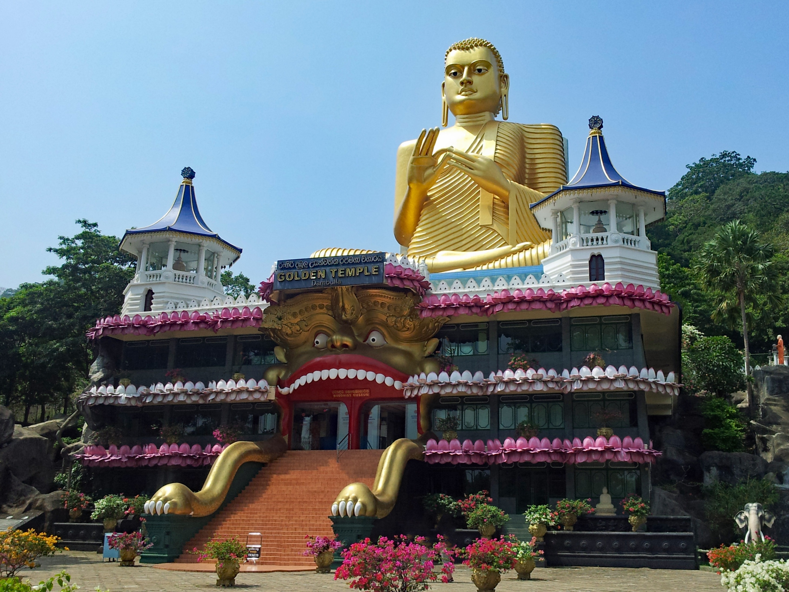
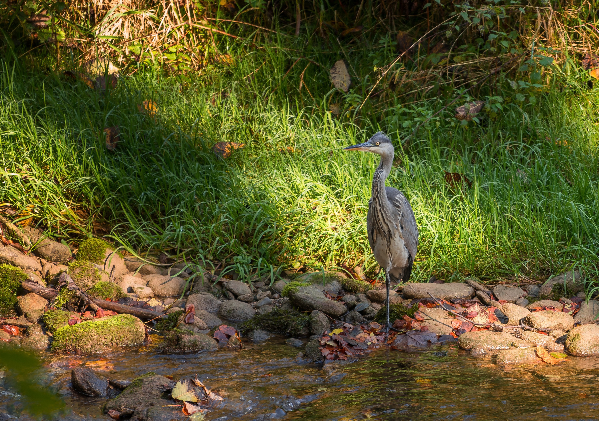

You have more to explore with your adventures journey.So if you are interested in that case.You are booking the best option that you can find.You can get chilled with your neighbours and friends.

MINNERIYA NATIONAL PARK
Minneriya National Park is located in Sri Lanka’s North Central Province, 182 kilometers from Colombo. The major cities closest to Minneriya National Park are Habarana and Polonnaruwa.
The renovated, vast ancient Minneriya Rainwater Reservoir that irrigates a considerable area of the district of Polonnaruwa is the focal point of the Minneriya National Park.
Minneriya National Park, which is part of the elephant corridor that connects Kaudulla and Wasgamuwa National Parks, provides visitors with the opportunity to see elephant herds all year. May to October is the best period to visit Minneriya National Park in view of the world-famous Great Elephant Gathering of the Asian wild elephants.

DAMBULLA CAVE TEMPLE
Located north of Kandy, Dambulla is a town built around a vast isolated rock mass and is a UNESCO World Heritage Site. The name Dambulla was derived from the words Damba meaning rock and Ulla meaning fountain. The Dambulla temple complex comprises five caves which have been converted into shrine rooms, images of the Buddha, and over 1,500 ceiling murals. The caves are at the base of a 150m high rock built by King Valagambahu who took refuge in it when exiled from Anuradhapura in the 1st century BC. When he reclaimed the capital he turned these caves into a rock temple as a thank-you offering. Over the centuries that followed further improvements were made including one by King Nissankamalla who gilded the inside of the temple, earning it the name Ran Giri (Golden Rock) and added 70 statues of the Buddha in the 12th century.
This temple is by far the most impressive of the many cave temples found in Sri Lanka and is considered the best preserved and the largest in the island. Access is along the gentle slope of the Dambulla rock and offers panoramic views of the surrounding flat lands, including the rock fortress Sigiriya, 19km away.

HOT AIR BALLOON
Hot air balloon is a type of an aircraft lifted by heating the air inside the balloon, usually with fire. Hot air balloon is the oldest successful human-carrying flight technology. A hot air balloon consists of a bag called the envelope that is capable of containing heated air. Hot air balloon ride can be categorized as a thrill, a frightening experience and its a marvelous way to take to the air and get a bird’s eye view of the ground below.
Hot air balloon is a famous adventure sport provide an unforgettable experience for travelers with a low flying 500 M – 2,000 M with a bird eye view.
Sri Lanka is a hotspot of adventure holiday with plenty of thrilled activities including wildlife safaris / hot air balloon / white water rafting / trekking / hiking etc and hot air ballooning is a demanding adventure sport in Sri Lanka. Dambulla / Kandama / Sigiriya areas are the best locations for hot air ballooning activity due to its climate in Dambulla – Kandalama which is exceptional for flying balloons, due to its extremely calm and predictable nature. Enjoy this breath taking activity in the Cultural Triangle during your family vacation in Sri Lanka.

PIDURANGALA ROCK CLIMBING
Pidurangala is a massive rock formation located a few kilometers north of Sigiriya in Sri Lanka. It has an interesting history closely related to that of the Sigiriya Rock Fortress. Climbing to the top of Pidurangala Rock is more strenuous than climbing Sigiriya. If you are fit and adventurous it is a climb worth making. It will take you about two hours. There is far less to see on this site than Sigiriya.
Pidurangala is a more challenging climb than Sigiriya, so should not be attempted by those with poor physical fitness. There is no clear path to the top: steep, uneven steps give way to an expanse of boulders and crevices that climbers must navigate in order to reach the summit.

GUIDED BIRD TRAIL
Sri Lanka is home to 26 endemic-bird species and seven proposed endemic species. The total number of bird species recorded in the island is 492 of which 219 are breeding residents. Bird Life International recognize Sri Lanka as one of the world's Endemic Bird Areas. The number of endemic species has changed many times over the years. Surrounding of Sigiriya Rock Fortress is a designated forest reserve and is a very good birding destination. Sigiriya sanctuary is a well- protected area as it is a UNECO World Heritage Site, waterways and thick canopied forests make it a heaven for birds. You will be accompanied by our expert bird watching naturalist for the Bird watching in Sigiriya Sanctuary in the morning hours from 6 Am to 10 AM. Finishing the morning bird watching in Sigiriya you will be transferred to an Eco Lodge in Habarana for lunch and for some rest. There too you would be able to see many verities of birds in the lodge's compound. At 3 PM we venture in to the jungles of Habarana surrounded by many lakes which is a very good habitat for birds. By 6 PM the trip will come to an end and you will be then transferred to your hotel in Dambulla, Habarana or Sigiriya.
All of these places are not far from our hotels, It will take 15 minutes at most.